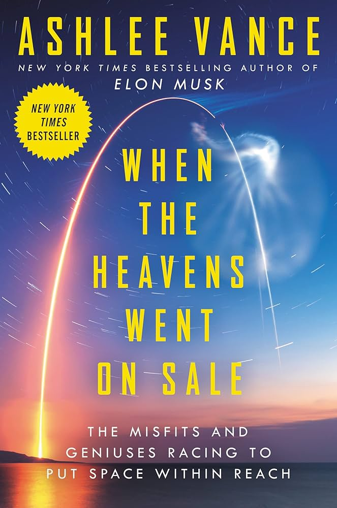

Book Review: When The Heavens Went on Sale
25 October 2025

This was a quick page turner I bought back in 2023 when it released. I had read the Ashlee Vance Musk biography in 2016 and generally enjoyed it, and had the same experience here.
The book follows four New Space companies, that is, companies that appeared after SpaceX was a huge success and proved commercial spaceflight, not backed by the bottomless pockets of a government, was possible. The four are Planet Labs (bay area-based; grid of imaging satellites), Rocket Lab (New Zealand-based; launch provider and more), Astra (bay area-based; launch provider), and Firefly (Austin-based; launch provider). Each one neatly takes up ~125 pages to make 500 pages total.
Each of the four stories follows the similar startup/founder yarn: the lone founder obsesses over their idea since childhood, thinks making a product will be easy and world domination is assured shortly after, works a million hours on a shoestring budget, completes their product and achieves success at the last moment after many delays, and investors finally dump money in and the company valuation skyrockets. Once you've read one of these, you've read them all. To list a few: Brad Stone's Amazon book, the Vance Musk bio, In The Plex (Google), and so on. These four aren't different.
Or so I thought; the first two (Planet Labs and Rocket Lab) followed this formula, but the third was unique: at the start, Vance stresses how he was given in-depth access very early in Astra's existence, and that the company could go either way. And the way it went was down! Firefly was overall successful, but had some political/interpersonal intrigue with the Ukrainian Max Polyako being forced to divest.
So what were the takeaways for starting a successful New Space Company
- Minimum Viable Product. Just make something that works. Astra was way too enamored with making an extremely small rocket, for no apparent benefit. You can have that unique angle in software where products cost nothing to try out and differentiation matters, but mass-to-orbit is mostly interchangeable, especially now. The ideal sequence is something like:
- Tiny rocket with one engine that makes it past the Karman line. Peter Beck did this with Rocket Lab. It's very cheap, and the payload should be like, 2 pounds. SpaceX and Firefly skipped this, but they're a bit more flush with cash.
- Small rocket that reaches orbit. One engine, not reusable. This was Falcon 1 and Rocket Lab's Electron. This should have just enough payload to have a paying customer, like 200 pounds. Get some revenue and successful launches on the board.
- A bigger rocket. The Falcon 9. This has low $/kg to orbit. The Falcon 9, and the second gen rockets from Rocket Lab and Firefly. Ideally, after you make this rocket work, you then make the main stage reusable for more cost savings.
Rocket Lab executed this flawlessly and frankly it's a testament to Peter Beck that he was able to do so with no money, living in New Zealand. Planet Labs also did the satellite version of this, basically, with phoneSat followed by gen 1 Doves followed by the bigger sat (the name escapes me). Firefly was overall okay; Tom Markusic sort of daydreamed further than were Firefly ever was (causing them a lot of financial pain when they inevitably fell behind), but they did have successful small rocket launches. Astra was the big failure here: it was a combination of Adam London's obsession with tiny parts (the idea being tiny=easy, cheap, and fast to make; but in truth none of those 3 are true), and Chris Kemp's application of a Silicon Valley managerial style. Mostly Chris. That style was: overpromise hugely; launch when you're not ready, causing huge amounts of burnout and stress for no data gain and reputational damage; be out of your technical depth and think you can overcome barriers smarter people have failed on because you are special. The opposite of Peter Beck.
- Test, test, test. Test small stuff, test pieces integrated together, test nightly, test weekly. There's no point in launching if you haven't tested enough. You should only launch if the data from the launch is going to be more valuable than if you had just done more testing on the ground.
- It's going to take longer, cost more, and be less functional than you plan. No rocket is on time, rockets tend to take about 5x the expected amount of time, in fact. Founders also often daydream of a simple, smooth ramp into bigger rockets and other space products (sats, etc) that doesn't happen, because the rocket is so hard. It's not going to have that payload number, because every flaw will need a fix that adds mass, or reduces thrust, which has to come out of the payload.
So, it was an enjoyable read. I need to read the Weinersmith space colonization book now, before Christmas, in addition to a bunch of Stripe Press and other books, just to be sort of caught up, but this one was nice to get out of the way and at the end of the day I do love the interpersonal drama of these startups.